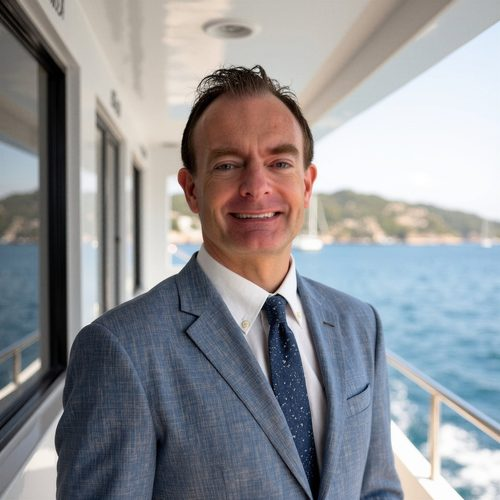
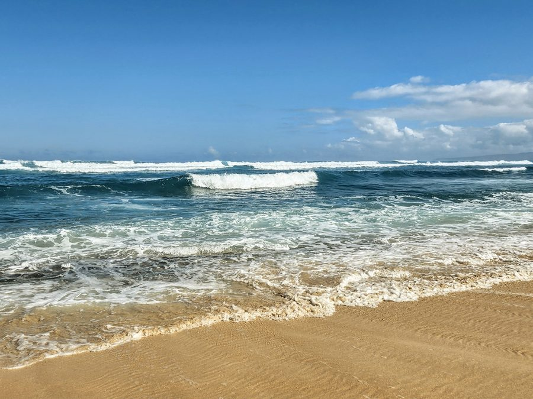
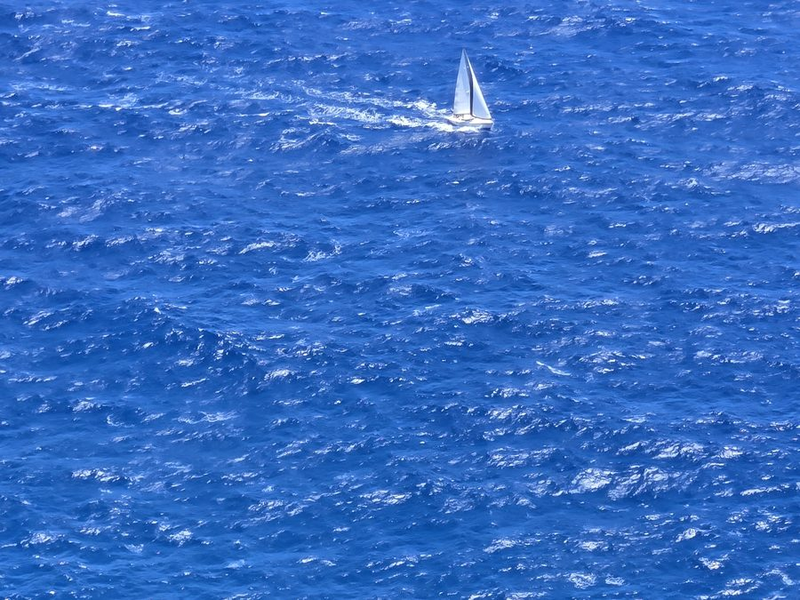

Joseph Lynch, CRPC
Retirement & Financial Wellness · Kansas City and Oahu
I've spent about 16 years in retirement and financial services, from the retirement phone lines and internal wholesaling at Security Benefit to one-on-one participant guidance and workshops at Empower. I hold the CRPC and RPF I & II designations and am working toward my CFP.
Outside of work, I volunteer teaching financial literacy to at-risk youth. Helping people understand their money is the part of this work I care about most.
Documents
- Research & Questions: Financial Wellness ConsultantCreative Planning · 6-page write-up tied to the job description (PDF)
- Questions for the Hawaii TeamCreative Planning · Follow-up letter to the hiring manager
Oahu

